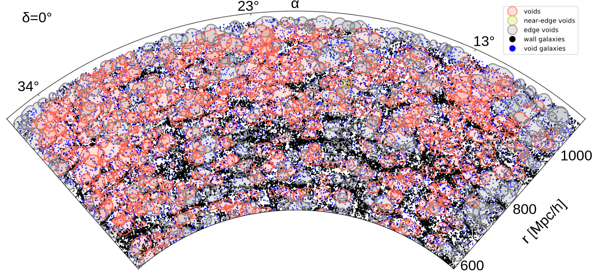
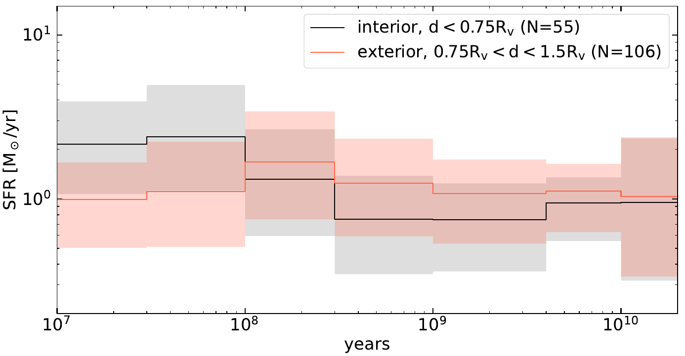
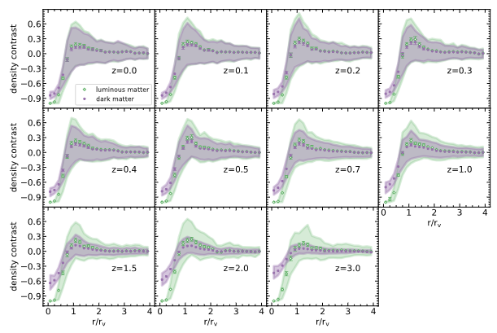

ORCiD
ORCiD
Olivia Curtis
she/her
ocurtis@psu.edu
I am a postdoctoral researcher at the Penn State University Department of Astronomy and astrophysics. Before moving to state college, I was a graduate student at the Boston University Department of Astronomy and Institute for Astrophysical Research. Before that, I received my B.S. in physics and B.A. in Mathematics from the University of South Florida.
A visualization I made in 2021. The video shows the dark matter density of the Illustris TNG300-3 simulation at redshift 0.
As an astrophysicist, I am interested in galaxy evolution in the context of the cosmic web. Using state-of-the-art magnetohydrodynamics simulations and observational surveys my dissertation work was focused on studying galaxies within cosmic voids. Voids are some of the largest, emptiest regions of the universe, but they are not completely devoid of matter. As such, most of my dissertation work was focused on studying the global population statistics of these so called void galaxies to help put constraints on how the rarefied void environment affects galaxy evolution.
As a postdoctoral researcher, I work with Professor Jason Wright at the Penn State Extraterrestrial Intelligence Center to perform extragalactic SETI searches. I have set out to put robust upper limits on the energy supply of industry in the 10^5 galaxies resolved by the Wide-field Infrared Survey Explorer (WISE). In essence, any star-faring civilization that has spread around its galaxy will have left technosignatures in the mid-infrared light that emanates from that galaxy. Thus, I am looking for galaxies with MIR fluxes that are too high to be explained by the star formation, dust, and active galactic nuclei that the other parts of their SEDs require them to have.
HETDEX Voids at the 246th AAS Meeting
July 12th, 2025

Voids in the HETDEX fall field.
This summer I presented a catalog of voids in the Hobby-Eberly Telescope Dark Energy Experiment (HETDEX) field (top) at the 246th AAS meeting in Anchorage, Alaska.
I selected ~150 galaxies in and around a single void that is in the the Spitzer/HETDEX Exploratory Large-Area (SHELA) field, which has broadband photometric coverage ranging from ~0.4-4.5 microns. I used this photometry, along with the stellar population synthesis code Prospector, to derive average star formation history profiles for galaxies in and around voids (bottom).

Star formation rate in void galaxies.
New paper accepted
April 23rd, 2025
My paper titled Density Profiles of TNG300 Voids across Cosmic Time was recently accepted for publication in the Astrophysical Journal. In it, we measure the clustering bias between galaxies and dark matter particles in the TNG300 simulation from the present day to the over 10 billion years ago, making predictions for the void radial profiles that the ongoing Euclid survey will be making in the coming years.

Void density profiles over cosmic time.